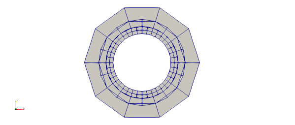
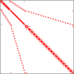
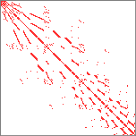
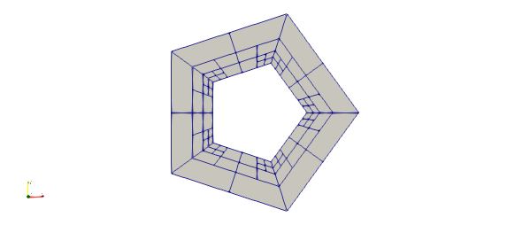
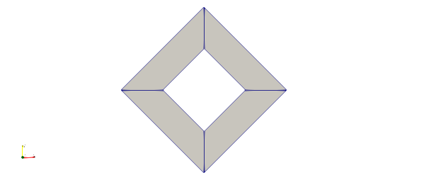
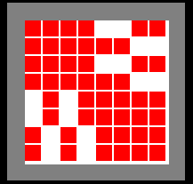
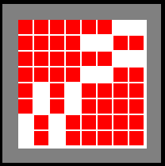
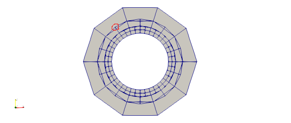

2019.09.21 Step-2 StudyThe step-2 is mainly talking about the degree of freedom (Dof) of a FEM problem.
First, let’s generate the default mesh, where the process is same as the one in step-1.

The default results can also be generated, which are the sparsity patterns before optimization and after.


From the results, we can see, after optimization, the band of width of the FEM system matrix has been reduced, which is beneficial.
Now we will try some thing else,
If we remove reset all the manifold by using
1 | triangulation.reset_all_manifolds(); |
we can get a little bit strange mesh,

This is because the reason we discussed in step-1.
Now we will keep using the reset manifold code and use a smaller initial grid number, say 4, without mesh refinement function as well.

Now we also generate the sparsity patterns of this coarse mesh.


From the figures, we can see that the total DoF is 8 because they are showing 8-by-8 matrices.
However, we have 8 nodes in the mesh. If each node has two DoF (x, y), we should end up with 16-by-16 matrices. So what is the problem?
The answer is still not clear for me yet. But I guess the “dofhandler” only considers one node as one DoF. So it can be conviniently dimensionless?
I think I found the answer from the official tutorial document: Describing “degrees of freedom” in this context requires us to simply enumerate the basis functions of the space Vh. For Q1 elements this means simply enumerating the vertices of the mesh in some way, but for higher order elements, one also has to enumerate the shape functions that are associated with edges, faces, or cell interiors of the mesh.
Moreover, there is one sentence in step-3: “the index of a particular degree of freedom within the DoFHandler object that is defined on top of a triangulation (as opposed to the index of a particular degree of freedom within a particular cell). “
So my guess should be correct.
One more thing needs to be investigated is about the mesh.

The problem has been highlighted, which is the mismatch between the vertices after mesh refinement.
The official tutorial document is as follows,
https://www.dealii.org/current/doxygen/deal.II/step_2.html